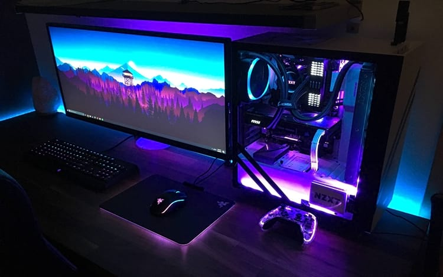
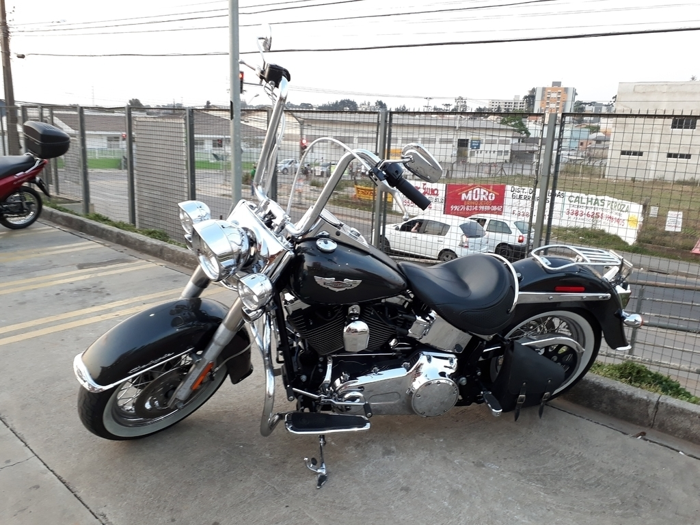
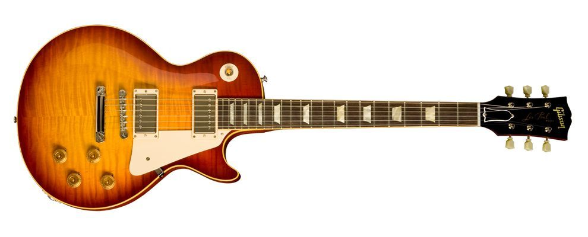

Este exercício consistia em mostrar 3 imagens
Então peguei fotos de coisas que simbolizam meu mundo
pra ilustrar quem sou de uma maneira abstrata.

Computador Desde novo, sempre fui apaixonado por games, na época do PS2, e isso contribuiu para que eu descobrisse que os jogos eram feitos a partir de computadores.

Harley Davidson's Minha relação com motocicletas, específicamente desse tipo, é algo difícil de explicar, é algo enraizado dentro de mim, um sonho que espero alcançar com a programação.

Guitarra Comecei a tocar guitarra em 2020, e venho desde então gostando disso tanto quanto programar, são coisas que alegram meus dias.